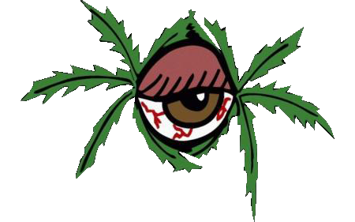
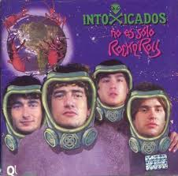
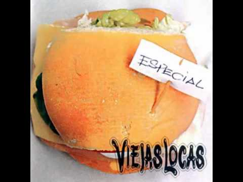

|
 |
|
 |


| Viejas Locas ( 1989 - 2000 ) | Intoxicados ( 2000 - 2009 ) | Viejas Locas ( 2009 - 2018 ) |
Demos, Rarezas y Otras Yerbas (1993) |
|
|
 Viejas Locas (1995)
Viejas Locas (1995)Temas destacados: "Intoxicado", "Nena me gustas asi", "Lo artesanal" |

No es solo Rock&Roll (2003) |
Contra la pared (2011) |
|
 Otro dia en el planeta tierra (2006)
Otro dia en el planeta tierra (2006)Temas destacados: "Ninia de Tilcara", "Nunca Quise", "Fuiste lo mejor", "Fuego", "Espero que la vida" |
|
 Especial (1999) |
El exilio de las especies (2008) |
|
 |
||